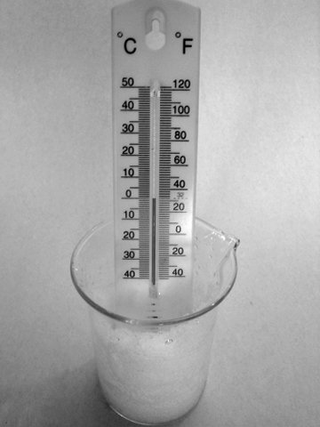
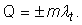

Elemente de termodinamică. |
Transformări de stare de agregare |
F-5. |
Topirea şi solidificarea |
 Activitatea experimentală 5-1
Activitatea experimentală 5-1
Investighează topirea gheţii. Lucrează acasă.
Pasul 1. Pregăteşte cuburi de gheaţă în congelatorul frigiderului.
Pasul 2. Sfărâmă câteva cuburi de gheaţă şi pune−le într−un pahar transparent. Pune în gheaţă
un termometru de cameră (figura 5−1).

Figura 5-1. Topirea gheţii.
Pasul 3. Observă atent ce se întâmplă cu gheaţa din pahar şi urmăreşte indicaţiile termometrului. Amestecă
din când în când cu o linguriţă, pentru omogenizarea temperaturii.
 Numim topire transformarea unei substanţe din stare solidă
în stare lichidă. Topirea are loc cu absorţie de căldură (căldura latentă de topire).
Numim topire transformarea unei substanţe din stare solidă
în stare lichidă. Topirea are loc cu absorţie de căldură (căldura latentă de topire).
Pentru o substanţă solidă având particulele ordonat aranjate, la o presiune dată, există o anumită temperatură la care
agitaţia termică devine suficient de intensă pentru ca aranjarea ordonată să se "destrame": solidul se topeşte −
devine lichid. Căldura latentă de topire este necesară pentru "ruperea" legăturilor dintre particulele solidului.
Când lichidul eliberează energie sub formă de căldură, legăturile caracteristice stării solide se refac: lichidul se
transformă în solid.
Numim solidificare transformarea unei substanţe din stare
lichidă în stare solidă. Solidificarea are loc cu eliberare de căldură (căldura latentă de solidificare).
Tabelul 5−1 prezintă temperaturile de topire/solidificare la presiune atmosferică normală şi căldurile latente
specifice de topire/solidificare pentru câteva substanţe.
Tabelul 5-1. Temperaturi de topire (Tt) la presiune atmosferică normală şi călduri
latente specifice de topire (λt).
| Substanţa |
Tt
(K) |
λt
(kJ/kg) |
| gheaţă |
273 |
333 |
| mercur |
234 |
12 |
| plumb |
600 |
26 |
| aluminiu |
932 |
380 |
| oţel |
1810 |
270 |
Poţi calcula cantitatea de căldură schimbată cu mediul în timpul topirii sau solidificării unei cantităţi de masă
m a unei substanţe, astfel:

Vei folosi semnul "+" în cazul topirii (căldură primită) şi semnul "−" în cazul solidificării (căldură cedată).